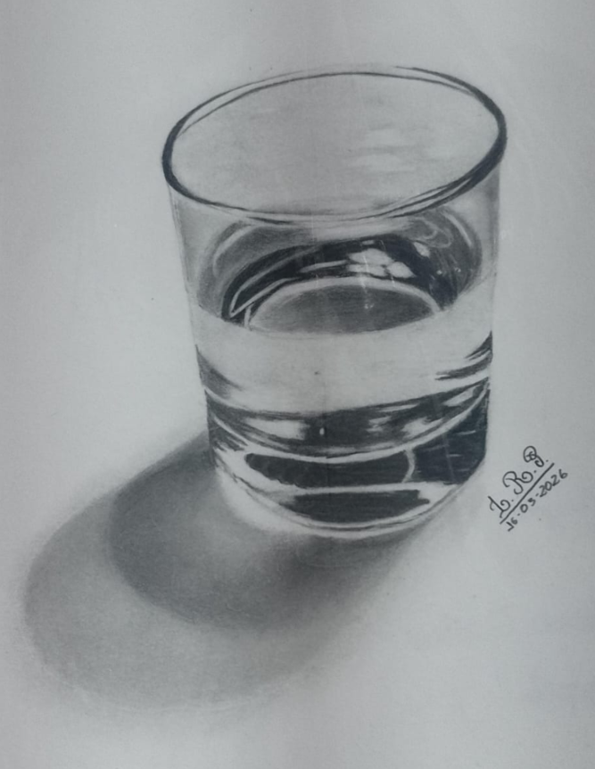

Desenho realista busca representar pessoas, paisagens, objetos, etc, de forma parecida com uma referencia.
Para fazer um desenho realista é importante observar detalhes, sombras, luz e proporções.
Os principais materiais são lápis HB, 2B, 2H, 4B ; caneta borracha, folha, pincel e esfuminho.
